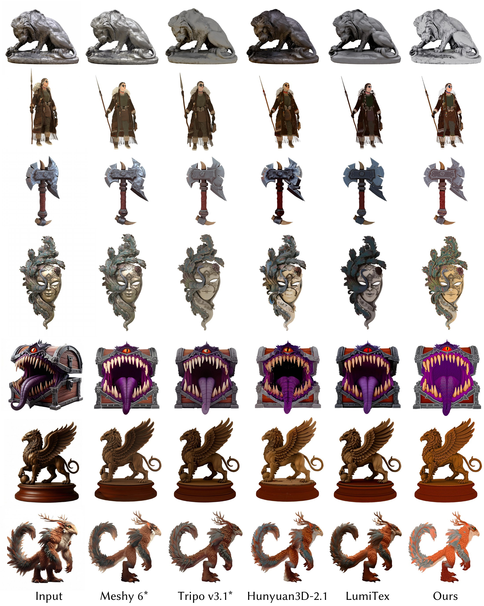
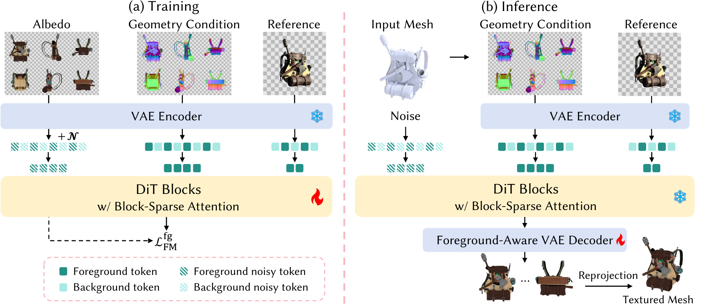
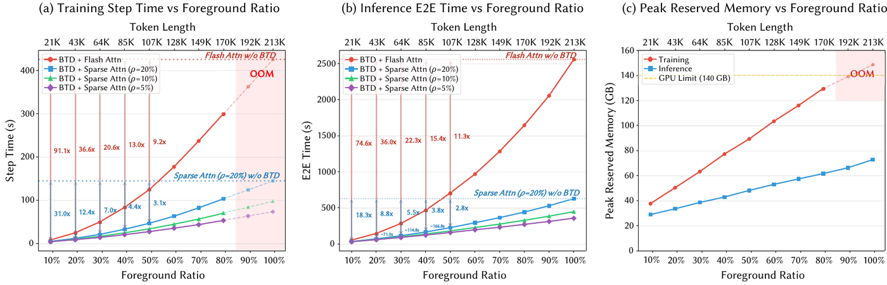

Unleashing 2K Multi-View Diffusion for 3D Texturing
High-quality texture generation is essential for creating realistic and production-ready 3D assets. Recent multi-view diffusion methods have shown promising results for image-guided 3D texturing, but they are typically constrained to low operating resolutions such as 512 or 768, making it difficult to preserve high-frequency details from high-resolution reference images. Scaling this paradigm to 2048 resolution is computationally prohibitive, as the unified multi-view sequence exceeds 212K tokens and incurs excessive memory and latency.
In this paper, we present UltraTex, an efficient end-to-end framework for high-resolution multi-view diffusion-based 3D texturing. Our key observation is that object-centric multi-view renderings contain two major sources of redundancy: background-induced sequence redundancy and sparse token interactions within the foreground. To address them, we introduce Background Token Dropping, which removes background tokens before the DiT backbone, and Block-Sparse Attention, which reduces attention computation over the retained foreground sequence. To enable efficient foreground-only inference while avoiding reconstruction artifacts, we further design Foreground-Aware VAE Decoding to ensure the quality of the final high-resolution views.
To satisfy the demanding data requirements of 2K-resolution multi-view diffusion training, we construct G-buffer TexVerse, a large-scale, ultra-high-resolution multi-view rendering dataset covering 351,847 BSDF assets (UltraTex training uses a 268,365-asset subset). Extensive experiments show that UltraTex generates visually faithful textures with rich fine-grained details, while substantially improving efficiency, achieving 20.6×–91.1× training speedup and 22.3×–74.6× end-to-end inference speedup over the baseline on common samples in our dataset.
UltraTex produces geometry-aligned 2K multi-view textures that preserve fine-grained appearance detail from the reference image.

UltraTex scales in-context multi-view diffusion to 2048 resolution through three complementary foreground-aware designs.

Object-centric renderings are mostly empty canvas. We extract binary foreground masks from the rendered alpha channels, downsample them to the latent token grid, and discard background tokens before the DiT backbone. Retained tokens keep their original RoPE position indices, so absolute spatial coordinates and the multi-view geometric prior survive the removal.
Even within the foreground, token interactions are sparse. We apply block-sparse attention with a top-k selection mechanism over the compressed sequence, bypassing dense layer-wise modeling while keeping the interactions that matter for multi-view consistency.
Foreground-only denoising leaves the background at its initial Gaussian noise. Decoding such a composite latent corrupts the foreground. We substitute a canonical in-distribution background latent and lightly fine-tune the decoder with a foreground-restricted objective for artifact-free reconstruction.
Background Token Dropping shortens the sequence; Block-Sparse Attention sparsifies what remains. The two mechanisms compose multiplicatively.

BTD alone delivers 1.4×–53.0× training speedup (1.0×–48.1× inference) and dominates at low foreground ratios where background tokens are the bulk of the sequence. BSA after BTD contributes a steadier 1.7×–2.9× training (1.6×–4.1× inference) and grows with the foreground ratio, complementing BTD when there is less background to drop.
A large-scale, ultra-high-resolution multi-view rendering dataset built on TexVerse. The public release is 351,847 BSDF assets at up to 4096×4096; UltraTex training uses a 268,365-asset subset.
Every asset is rendered under both configurations. They share the same camera intrinsics, object normalization, aspect-ratio-adaptive distance, and sampled lighting — they differ only in viewpoints.
Four side views at azimuths 0°, 90°, 180°, 270° with zero elevation, plus a top and a bottom view. This defines the six-view layout our diffusion model is trained and evaluated on.
Twelve azimuths spaced every 30° at each of three elevations (−40°, −20°, 30°). Not used by UltraTex; released for tasks needing denser coverage, such as novel-view synthesis and sparse-view reconstruction.
@inproceedings{zhang2026ultratex,
author = {Zhang, Yibo and Yuan, Ze and Cao, Nan and Zhang, Li and
Cao, Yan-Pei and Guo, Yuan-Chen and Ma, Rui},
title = {UltraTex: Unleashing 2K Multi-View Diffusion for 3D Texturing},
year = {2026},
isbn = {979-8-4007-2842-6},
publisher = {Association for Computing Machinery},
address = {Kuala Lumpur, Malaysia},
url = {https://doi.org/10.1145/3829340.3842299},
doi = {10.1145/3829340.3842299},
booktitle = {SIGGRAPH Asia 2026 Conference Papers},
series = {SA Conference Papers '26},
month = dec
}